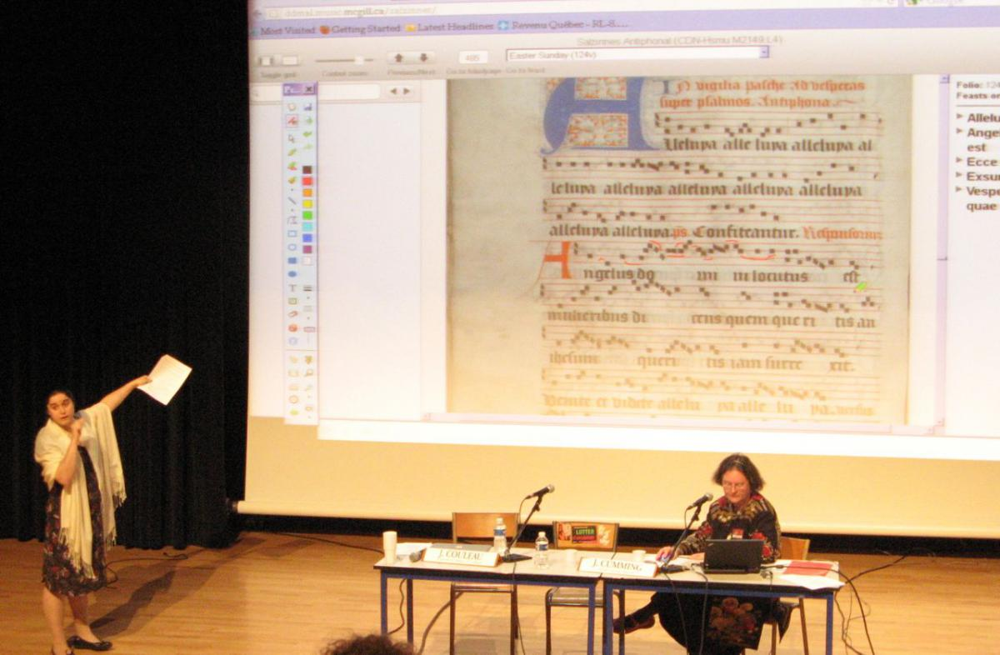

Personal Update for Catherine
Posted by Catherine Motuz on July 05, 2012
The last few months have been hectic, and ironically a lot of my computer time has gone to inputting music into Finale, because OMR is in such an early stage that it’s still faster to manually input pieces, not only when working off of a dirty facsimile, as I so often do, but even when working from scores made in Finale in the first place. So I’ve edited about 45 pieces in the last month - at least they will go into the ELVIS database. The rest of the time, I’ve got to know a few of the ins and outs of Drupal, and have been managing the ELVIS website (both the technical side and helping to establish rules and vocabularies) as well as contributing to it. To practise installing a module without worrying about side-effects, I put in a tag cloud so that we can see the most common tags at a glance. Beyond that, organizing the tags is such an interesting issue that they will get a post of their own.
Fortunately I’ve had a some time not glued to a computer lately too, much of it improvising duos based on liturgical chant with my advisor, Prof. Julie Cumming. We’ve presented these improvisations in public twice, once in the course of a paper in Toulouse, and the second time at a McGill Mini Music lecture. Both times, we got the audience to choose a chant at random by selecting a feast, and we searched the antiphonal using the Salzinnes diva viewer. In Toulouse, it proved an excellent occasion to show off this DDMAL lab work to our musicology colleagues, as they were exactly the audience who might use it themselves. Here is a picture of the presentation, where we are annotating the Salzinnes image on our screen to prepare to sing from it:  I’ve also shared the Liber Usualis search engine with some other musicologists - one who had found a manuscript fragment and was wondering if the notes on it belonged to a chant or not. Very exciting uses!
This week I was absorbed into the Rodan project, where all of the work Laura put in this year inputting Salzinnes into Gamera, and my analysis of what Gamera is and isn’t good at, are beginning to bear fruit. In Gamera I created a small but effective neume library for Salzinnes for use with the Rodan demo, and will do more once we’ve figured out how to get Gamera working better (in particular, measuring values along a diagonal axis rather than just x and y axes, where clivis and podatus look the same).
Now it’s back to ELVIS, where Chris’s programmes has made basic data queries possible. I still need to get comfortable with enough python to make it work, but his clear and well-documented text interface makes that task less daunting than it previously was. In the meantime, I’ve got plenty of files that need uploading, so my work is cut out for me for the next while.